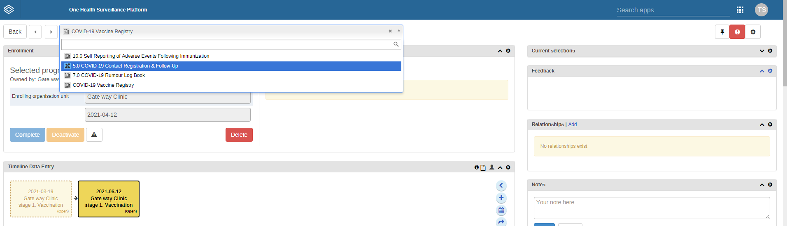
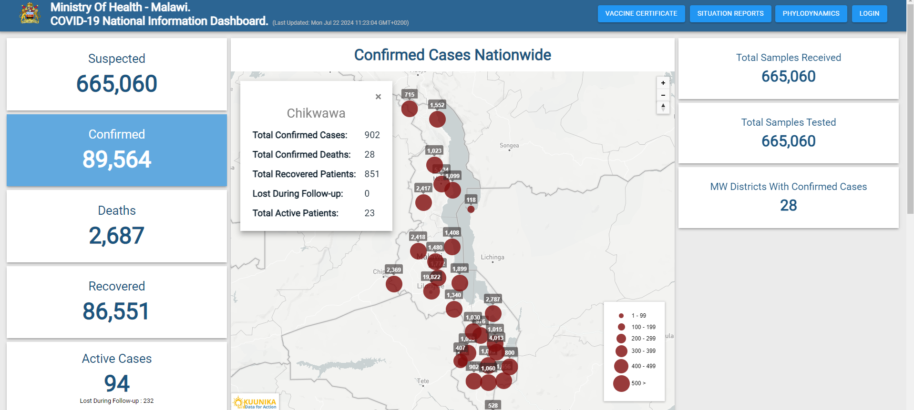
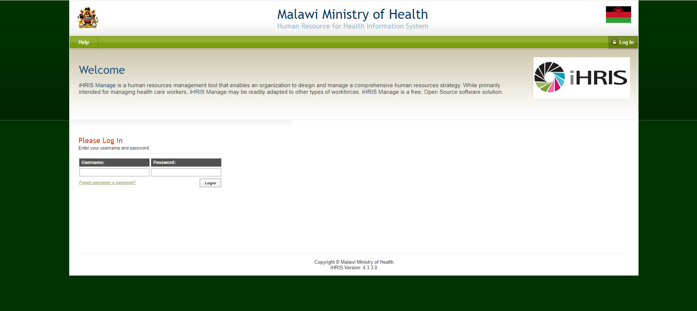

Portfolio
COVID VACCINE REGISTRY

Covid 19 electronic registry. It is based on one health survellence platform. It is an instance of DHIS2 for mobile based on android.
I was a trainer and support for the project,
Live Demo |
Repository
iHRIS Manage is a human resources management tool that enables an organization to design and manage a comprehensive human resources strategy.
While primarily intended for managing health care workers, iHRIS Manage may be readily adapted to other types of workforces.
COVID 19 Dashboard

Covid 19 electronic registry. It is based on one health survellence platform. It is an instance of DHIS2 for mobile based on android.
I was a trainer and support for the project,
Live Demo | Repository
it is used to tod analytics for covid19
iHRIS

An online database for managing health workers in Malawi. It was developed and customised because it is an open source platform
It runs on ubuntu server. It run on mysql as database , fused with php , xml
I was a trainer and support for the project,
Live Demo | Repository
it is used to tod analytics for covid19
Experience
DIGITAL HEALTH DIVISION – MINISTRY OF HEALTH
LUKE INTERNATIONAL NORWAY – October 2019 to 2023
SOFTWARE DEPLOYMENT AND SUPPORT OFFICER
Conduct hardware and software tests as well as environmental assessment for digital
• health solutions implementation.
• Engage with local authorities and users for technical assessments, engagement
• meetings and implementation planning.
• Perform system software and hardware setup digital health solutions implementation.
• Lead capacity building efforts for system users in use, maintenance and troubleshooting
• of technical solutions.
• Conduct regular on-site visitation to ensure system availability and use
• Responding to first –level system problems diagnosis and user system support
2 Teddy Sandram Banda
Curriculum Vitae
• Maintaining active communication with District Support teams, users and
• implementation sites while documenting and tracking error reports and corresponding
• response
• Working with Hardware and Supplies Manager to keep an updated list of located and
• state of hardware and supplies deployed.
• Proactively participate and facilitate in use of data to support health services delivery
• quality improvement efforts at the district and facility levels.
• Any other duties assigned by the Senior Management from time to time.
SOFTWARE DEPLOYMENT AND SUPPORT OFFICER – July 17 – October 2019
Baobab Health Trust
• Perform regular clinic visits to sites where Electronic Data Systems (EDS) supported by the
Kuunika Project are installed to monitor and solve problems. Communicate issues to
colleagues when support is demanded, to ensure issues are solved satisfactorily.
• Monitor and document usage of the electronic system by users such as nurses, clinicians
and clerks to check quality of usage and to give feedback to software developers on further
improvement opportunities.
• Perform system updates at healthcare centres in Malawi in cooperation with the hardware
team, network specialist team, MoH and other partners.
• Deliver required quarterly reports to MOH and other stakeholders
• Evaluate reports upon implementation of a system.
• Responsible in setting up indicators that ensure that systems are available at all times in all
system implementations. Produce monthly status reports that indicate availability of
different systems.
• Implementation of disposition of applications framework and graduating health facilities
through stability milestones.
• Review and update support operational documents eg standard operating procedures
• Responsible for building and maintaining external relations communication with partners,
site implementation and maintenance teams, e.g. ART Supervision teams, Nurses and
Clinicians.
• Responsible for production and submission of a field report for each and every site visit to
the Support Manager.
• Submit weekly timesheets to the support manager.
• Make sure support department has a fully working test bench with all up to date
• applications deployed in different health facilities running all the time.
• Take part in facility technical reconnaissance activities to understand site requirements
• and workflows for an electronic Medical Records System.
• Monitor usage of the electronic system by users such as nurses, clinicians and clerks during
the deployment phase to check quality of usage and to give feedback to Product Owners
and Training officer on further improvement opportunities.
• Perform Baobab system deployments and system updates at Health care centres in Malawi
in cooperation with the Operations and Support departments, MoH and other partners.
• Review various documents such as user training manuals, he/she will contribute to the
• report on lessons learned, documentation to further improve how we operate, and
• others in cooperation with various departments at Baobab Health Trust.
• Conduct end-to-end system tests to ensure specifications compliance.
• Evaluate reports upon EMR implementation. Submit monthly progress reports on the
performance of EMRs.
• Plan for weekly milestones and report on the progress of the same to the Deployment
Manager.
• Conduct quarterly data audits which will ensure that data being entered in the EMRs is
accurate, plausible and complete.
• Develop software tools which can be adopted by facility systems administrators and
support officers for real time monitoring of the EMRs.
– MINISTRY OF HEALTH – MAY 2008 to July 2017
h4>
• IHRIS Developer: Server Administration, Programming (HTML, css MySQL,
PHP, xml), user support, user training, customization of the system reports to meet
Ministry of Health needs and Apache Web server, SQL server management
• IFMIS Support Technician: supporting accounts and finance department on the
use of Ifmis on both hardware and software
• Website administrator: Administrator of the Ministry Website
• IT Technician: Computer Systems maintenance, hardware and software, for Mac,
Windows, Linux thus include deployment of applications, Computer systems
updates, security and upgrades
• Supportive Supervision System Programmer: XLS form development, User
Database administration, tableaux dashboard management, Application Deployment
to various users in facilities and DHMT user training
• dhis2 Programmer: Customization of the systems to suit Organization’s Needs,
Ubuntu Servers Support at the data centre, data migration, data sets customization,
PostgreSQL, Ubuntu installations, HTML, css tomcat Web server.
• Network Administrator – Ensure availability of networked services including
Internet, systems and printers. Routers and switch configuration. Security to prevent
intrusions and data theft. Ensuring that the Network and Internet are up and running
all the times.
• Ensuring data accuracy, quality, security is maintained in the hrmis systems
• End user support for day to day ICT issues